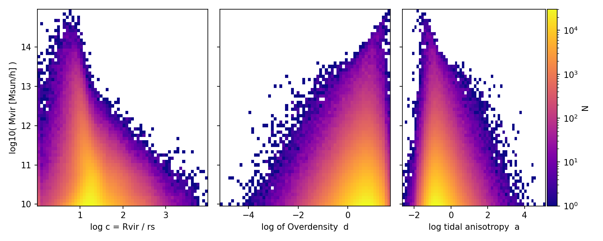

Background material to help students and new researchers understand and use Sahyadri data products. Click any topic to expand.
Getting Started
A complete, runnable example: download the z = 0 halo
catalogs for the fiducial cosmology, then relate halo mass to its tidal
environment — concentration, overdensity, and tidal anisotropy.
# Quick-start: halo mass vs. tidal environment at z = 0 (fiducial cosmology)## Step 1 - download the basic, extended and VAHC catalogs for the default# simulation at z = 0 (snapshot 100). Run these once, in a shell:## BASE=http://sahyadri.tifr.res.in/data/sahyadri_sims/halos/sahyadri/default2048/r1/compressed# wget -c $BASE/out_100_basic.fits.gz# wget -c $BASE/out_100_vahc.fits.gzimport numpy as np
import matplotlib.pyplot as plt
from matplotlib.colors import LogNorm
from astropy.table import Table
# Step 2 - read the catalogs (rows are matched across basic / extended / vahc)
basic = Table.read("out_100_basic.fits.gz")
vahc = Table.read("out_100_vahc.fits.gz")
# Step 3 - mass and concentration from the basic catalog.# Concentration is the standard NFW definition c = Rvir / rs.
mvir = basic["Mvir"] # virial mass [Msun/h]
conc = basic["Rvir"] / basic["rs"] # concentration# Step 4 - tidal environment from the VAHC catalog. lam1, lam2, lam3 are the# eigenvalues of the tidal tensor smoothed at 4 x R200b.
l1 = vahc["lam1_R5Mpch"]
l2 = vahc["lam2_R5Mpch"]
l3 = vahc["lam3_R5Mpch"]
# Overdensity = trace of the tidal tensor:
delta = l1 + l2 + l3
delta = delta/np.mean(delta) -1
# Tidal anisotropy: rms of the eigenvalue differences scaled by (1 + delta):
q2 = 0.5 * ((l1 - l2)**2 + (l2 - l3)**2 + (l3 - l1)**2)
alpha = np.sqrt(q2) / (1.0 + delta)
# Step 5 - keep resolved haloes with finite, positive estimates
m = (mvir > 9e9) & (conc > 0) & (alpha > 0) & np.isfinite(delta)
logM = np.log10(mvir[m])
print(f"Selected {logM.size} haloes")
# Step 6 - three panels sharing the halo-mass axis
fig, ax = plt.subplots(1, 3, sharey=True, figsize=(10, 4))
panels = [(np.log10(conc[m]), "log c = Rvir / rs"),
(np.log10(1+delta[m]), "log of Overdensity"),
(np.log10(alpha[m]), "log tidal anisotropy a")]
for axi, (y, label) inzip(ax, panels):
h = axi.hist2d(y, logM, bins=60, cmin=1, norm=LogNorm(), cmap="plasma")
axi.set_xlabel(label)
fig.colorbar(h[3], ax=ax[-1], label="N", pad=0.01)
ax[-0].set_xlabel("log10( Mvir [Msun/h] )")
fig.tight_layout()
fig.savefig("mass_vs_environment.png", dpi=150)
plt.show()

Illustrative output of the example above. Each panel shares the halo-mass axis; colour encodes halo counts on a log scale.